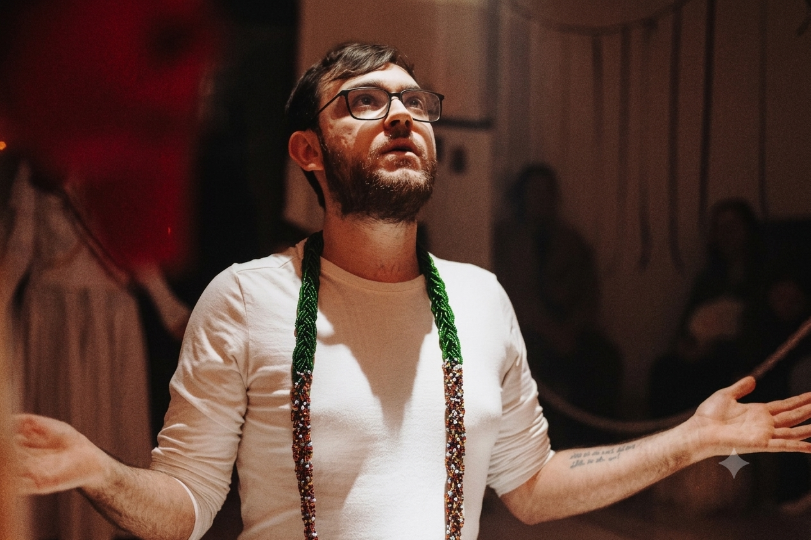

> terreiro: Casa dos Reinos da Terra — status atendimentos abertos
Pai Pedro de Oxóssi
Pai de Santo · Sacerdote de Umbanda
Meu nome é Pedro e juntamente com o Caboclo Guaracy e o Exu João Caveira fundei a Casa dos Reinos da Terra. Nossa missão é oferecer acolhimento, orientação espiritual e conexão com a ancestralidade através da Umbanda.
site em construção